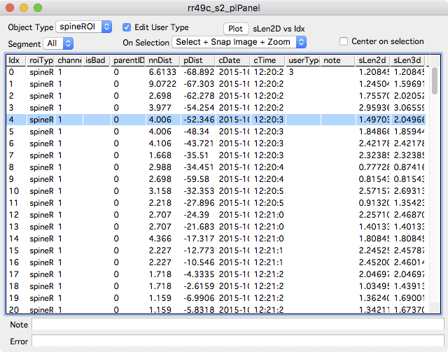
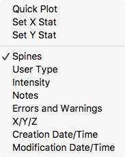
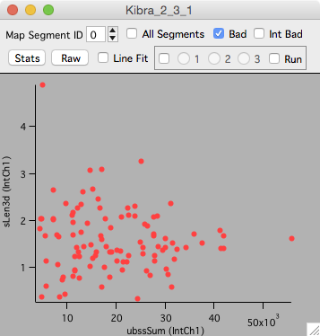

Point List

The point list panel displays a list of annotations for one stack.
To open a point list panel
- Right-click a stack and select the menu ‘Windows … Point List’.
- In a stack window, use the ‘Point List’ button in the left-panel. Open the left-panel with keyboard ‘[’.
Interface
Select individual annotations in the list and the selection will propagate to open stack windows, stack plots and map plot windows. The action performed when an annotation is selected can be specified in the ‘On Selection’ popup.
- Select. Select the annotation .
- Select + Snap Image. Select the annotation and snap to the (z) image plane.
- Select + Snap Image + Zoom. Select the annotation, snap to the (z) image plane, and zoom in on the annotation. The amont of zoom is controlled in Options - Stack Display - Default Zoom Width/Height.
Choose the type of annotation to display with the ‘Object Type’ popup. For spine annotations, the list can be limited to one or all segments.
Edit User Type
Turn on the ‘Edit User Type’ checkbox and use keyboard 0-9 to set the value of ‘User Type’. Counts for each User Type are included for each segment in each segment report.
Columns

A left-click on a column header will sort the table by that column. Shit+click the column header to reverse sort. Columns can be turned on and off with a right-click in the column headers.
Here is a partial list of the meaning of each column. See intensity for a list of the meaning of additional columns.
| Column | Meaning |
|---|---|
| Idx | The row in the table |
| roiType | The type of annotation (spineROI, controlPnt, otherROI). Control the displayed types with the ‘Object Type’ popup. |
| channel | The channel the annotation was created in. |
| isBad | Bad annotations are shown as ‘1’. In single time-point analysis, set annotations bad with keyboard b. |
| parentID | The segment number a spine annotation is attached to |
| z | The z-image plane the annotation is in |
| nnDist | Distance (um) to the nearest spine annotation. |
| pDist | Only for spine annotation maps, the distance (plus or minus) away from the pivot point |
| cDate/cTime | The creation date and time |
| mDate/mTime | The modification date and time |
| userType | The User Type for an annotation. User types can be edited by turning on ‘Edit User Type’ and using keyboard 0-9. |
| sLen2d | The 2D length of each spine annotation |
| sLen3d | The 3D length of each spine annotation |
Plotting

Right-click a column header and select Quick Plot to plot that stat versus its annotations index. The index of each annotation is the order they were created in.Any two columns can be plotted as X and Y. Right click a column and select Set X Stat, then right-click another column and select Set Y Stat. Then use the main Plot button to plot X versus Y.
For example, to plot ‘spine length 3d’ versus ‘background subtracted spine sum’.
- Turn on the intensity columns with a right-click on the columns header and select ‘Intensity’.
- Right-click on ‘sLen3d’ column and select ‘Set Y Stat’
- Right-click on ‘ubssSum’ column and select ‘Set X Stat’
- Click the ‘Plot’ button.